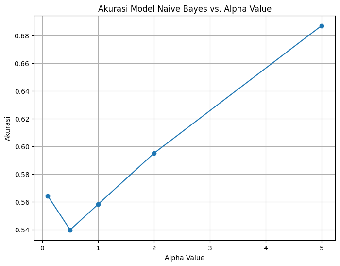

UTS - implementasi Latent Directlet allocation (LDA)#
Nama : Okhi Sahrul Barkah
NIM : 210411100112
Lakukan implementasi lda pada data abstrack:
dengan k=3 alhpa=0.1 beta=0.2
library di scikit-learn
doc_topic_prior float, default=None
Prior of document topic distribution theta. If the value is None, defaults to 1 / n_components.
In [1], this is called alpha.
topic_word_priorfloat, default=None
Prior of topic word distribution beta. If the value is None, defaults to 1 / n_components. In [1], this is called eta.
output adalah :
proporsi topik pada dokumen
distribusi kata pada topik
import pandas as pd
from sklearn.decomposition import LatentDirichletAllocation
df_tf = pd.read_excel("/content/drive/MyDrive/ppw/tugas/data-tugas/df_tf.xlsx")
df_tf
---------------------------------------------------------------------------
KeyboardInterrupt Traceback (most recent call last)
<ipython-input-2-c9a9ac7e16ea> in <cell line: 1>()
----> 1 df_tf = pd.read_excel("/content/drive/MyDrive/ppw/tugas/data-tugas/df_tf.xlsx")
2 df_tf
/usr/local/lib/python3.10/dist-packages/pandas/util/_decorators.py in wrapper(*args, **kwargs)
209 else:
210 kwargs[new_arg_name] = new_arg_value
--> 211 return func(*args, **kwargs)
212
213 return cast(F, wrapper)
/usr/local/lib/python3.10/dist-packages/pandas/util/_decorators.py in wrapper(*args, **kwargs)
329 stacklevel=find_stack_level(),
330 )
--> 331 return func(*args, **kwargs)
332
333 # error: "Callable[[VarArg(Any), KwArg(Any)], Any]" has no
/usr/local/lib/python3.10/dist-packages/pandas/io/excel/_base.py in read_excel(io, sheet_name, header, names, index_col, usecols, squeeze, dtype, engine, converters, true_values, false_values, skiprows, nrows, na_values, keep_default_na, na_filter, verbose, parse_dates, date_parser, thousands, decimal, comment, skipfooter, convert_float, mangle_dupe_cols, storage_options)
488
489 try:
--> 490 data = io.parse(
491 sheet_name=sheet_name,
492 header=header,
/usr/local/lib/python3.10/dist-packages/pandas/io/excel/_base.py in parse(self, sheet_name, header, names, index_col, usecols, squeeze, converters, true_values, false_values, skiprows, nrows, na_values, parse_dates, date_parser, thousands, comment, skipfooter, convert_float, mangle_dupe_cols, **kwds)
1732 DataFrame from the passed in Excel file.
1733 """
-> 1734 return self._reader.parse(
1735 sheet_name=sheet_name,
1736 header=header,
/usr/local/lib/python3.10/dist-packages/pandas/io/excel/_base.py in parse(self, sheet_name, header, names, index_col, usecols, squeeze, dtype, true_values, false_values, skiprows, nrows, na_values, verbose, parse_dates, date_parser, thousands, decimal, comment, skipfooter, convert_float, mangle_dupe_cols, **kwds)
763
764 file_rows_needed = self._calc_rows(header, index_col, skiprows, nrows)
--> 765 data = self.get_sheet_data(sheet, convert_float, file_rows_needed)
766 if hasattr(sheet, "close"):
767 # pyxlsb opens two TemporaryFiles
/usr/local/lib/python3.10/dist-packages/pandas/io/excel/_openpyxl.py in get_sheet_data(self, sheet, convert_float, file_rows_needed)
613 data: list[list[Scalar]] = []
614 last_row_with_data = -1
--> 615 for row_number, row in enumerate(sheet.rows):
616 converted_row = [self._convert_cell(cell, convert_float) for cell in row]
617 while converted_row and converted_row[-1] == "":
/usr/local/lib/python3.10/dist-packages/openpyxl/worksheet/_read_only.py in _cells_by_row(self, min_col, min_row, max_col, max_row, values_only)
90 # return cells from a row
91 if counter <= idx:
---> 92 row = self._get_row(row, min_col, max_col, values_only)
93 counter += 1
94 yield row
/usr/local/lib/python3.10/dist-packages/openpyxl/worksheet/_read_only.py in _get_row(self, row, min_col, max_col, values_only)
121 new_row[idx] = cell['value']
122 if not values_only:
--> 123 new_row[idx] = ReadOnlyCell(self, **cell)
124
125 return tuple(new_row)
/usr/local/lib/python3.10/dist-packages/openpyxl/cell/read_only.py in __init__(self, sheet, row, column, value, data_type, style_id)
12 __slots__ = ('parent', 'row', 'column', '_value', 'data_type', '_style_id')
13
---> 14 def __init__(self, sheet, row, column, value, data_type='n', style_id=0):
15 self.parent = sheet
16 self._value = None
KeyboardInterrupt:
df = pd.read_excel("/content/drive/MyDrive/ppw/tugas/data-tugas/DF_PTA.xlsx")
df['Label']
0 RPL
1 RPL
2 RPL
3 komputasi
4 komputasi
...
853 komputasi
854 komputasi
855 komputasi
856 RPL
857 RPL
Name: Label, Length: 858, dtype: object
Menggunakan Data TF - IDF tanpa menggunakan LDA#
df_combined = pd.concat([df_tf, df['Label']], axis=1)
print(df_combined)
aalysis aam abad abadi ability abjad absensi absolut absolute \
0 0 0 0 0 0 0 0 0 0
1 0 0 0 0 0 0 0 0 0
2 0 0 0 0 0 0 0 0 0
3 0 0 0 0 0 0 0 0 0
4 0 0 0 0 0 0 0 0 0
.. ... ... ... ... ... ... ... ... ...
853 0 0 0 0 0 0 0 0 0
854 0 0 0 0 0 0 0 0 0
855 0 0 0 0 0 0 0 0 0
856 0 0 0 0 0 0 0 0 0
857 0 0 0 0 0 0 0 0 0
abstract ... zat zcz zf zona zone zoning zoom zucara zungu \
0 0 ... 0 0 0 0 0 0 0 0 0
1 0 ... 0 0 0 0 0 0 0 0 0
2 0 ... 0 0 0 0 0 0 0 0 0
3 0 ... 0 0 0 0 0 0 0 0 0
4 0 ... 0 0 0 0 0 0 0 0 0
.. ... ... ... ... .. ... ... ... ... ... ...
853 0 ... 0 0 0 0 0 0 0 0 0
854 0 ... 0 0 0 0 0 0 0 0 0
855 0 ... 0 0 0 0 0 0 0 0 0
856 0 ... 0 0 0 0 0 0 0 0 0
857 0 ... 0 0 0 0 0 0 0 0 0
Label
0 RPL
1 RPL
2 RPL
3 komputasi
4 komputasi
.. ...
853 komputasi
854 komputasi
855 komputasi
856 RPL
857 RPL
[858 rows x 8428 columns]
df_combined = df_combined.dropna()
from sklearn.model_selection import train_test_split
from sklearn.naive_bayes import MultinomialNB
from sklearn.metrics import accuracy_score
# Pisahkan fitur dan label dari DataFrame yang telah digabungkan
X = df_combined.drop(columns=['Label']).values
y = df_combined['Label'].values
# Pembagian data menjadi data pelatihan dan data pengujian
X_train, X_test, y_train, y_test = train_test_split(X, y, test_size=0.2, random_state=42)
# Inisialisasi model Naive Bayes
model = MultinomialNB()
# Pelatihan model Naive Bayes dengan data pelatihan
model.fit(X_train, y_train)
# Prediksi label kelas pada data pengujian
y_pred = model.predict(X_test)
# Mengukur akurasi model
accuracy = accuracy_score(y_test, y_pred)
print("Akurasi: {:.2f}%".format(accuracy * 100))
Akurasi: 59.51%
import matplotlib.pyplot as plt
from sklearn.model_selection import train_test_split
from sklearn.naive_bayes import MultinomialNB
from sklearn.metrics import accuracy_score
# List untuk menyimpan akurasi pada setiap iterasi
accuracies = []
# Range nilai alpha yang akan diuji
alpha_values = [0.1, 0.5, 1.0, 2.0, 5.0]
# Lakukan pelatihan dan evaluasi model untuk setiap alpha
for alpha in alpha_values:
# Pembagian data menjadi data pelatihan dan data pengujian
X_train, X_test, y_train, y_test = train_test_split(X, y, test_size=0.2, random_state=72)
# Inisialisasi model Naive Bayes dengan alpha tertentu
model = MultinomialNB(alpha=alpha)
# Pelatihan model Naive Bayes dengan data pelatihan
model.fit(X_train, y_train)
# Prediksi label kelas pada data pengujian
y_pred = model.predict(X_test)
# Mengukur akurasi model
accuracy = accuracy_score(y_test, y_pred)
accuracies.append(accuracy)
# Visualisasi akurasi menggunakan grafik matplotlib
plt.figure(figsize=(8, 6))
plt.plot(alpha_values, accuracies, marker='o')
plt.xlabel('Alpha Value')
plt.ylabel('Akurasi')
plt.title('Akurasi Model Naive Bayes vs. Alpha Value')
plt.grid(True)
plt.show()

TOPIK 1 - 50#
from sklearn.decomposition import LatentDirichletAllocation
import numpy as np
lda_results = []
for n in range(1, 51):
lda = LatentDirichletAllocation(n_components=n, doc_topic_prior=0.2, topic_word_prior=0.1, random_state=42, max_iter=1)
lda_top = lda.fit_transform(df_tf)
lda_results.append(lda_top)
n_components = 50
column_names = [f'Topik {i+1}' for i in range(n_components)]
topik50 = pd.DataFrame(lda_top, columns=column_names)
topik50
| Topik 1 | Topik 2 | Topik 3 | Topik 4 | Topik 5 | Topik 6 | Topik 7 | Topik 8 | Topik 9 | Topik 10 | ... | Topik 41 | Topik 42 | Topik 43 | Topik 44 | Topik 45 | Topik 46 | Topik 47 | Topik 48 | Topik 49 | Topik 50 | |
|---|---|---|---|---|---|---|---|---|---|---|---|---|---|---|---|---|---|---|---|---|---|
| 0 | 0.002104 | 0.002097 | 0.002095 | 0.002112 | 0.002106 | 0.002105 | 0.002098 | 0.002096 | 0.002099 | 0.002093 | ... | 0.002095 | 0.002091 | 0.002104 | 0.002100 | 0.002112 | 0.002093 | 0.002091 | 0.002097 | 0.002090 | 0.002108 |
| 1 | 0.001653 | 0.001652 | 0.001646 | 0.001659 | 0.001651 | 0.001650 | 0.001647 | 0.001647 | 0.001649 | 0.001649 | ... | 0.001656 | 0.001644 | 0.001658 | 0.001650 | 0.001652 | 0.001647 | 0.001647 | 0.001649 | 0.001645 | 0.001678 |
| 2 | 0.001582 | 0.001584 | 0.001586 | 0.001597 | 0.001586 | 0.001586 | 0.001581 | 0.001591 | 0.001587 | 0.001582 | ... | 0.001580 | 0.001580 | 0.001590 | 0.001586 | 0.001591 | 0.001584 | 0.001582 | 0.001582 | 0.001578 | 0.001585 |
| 3 | 0.002420 | 0.002410 | 0.002409 | 0.618759 | 0.002425 | 0.002429 | 0.002416 | 0.002421 | 0.002425 | 0.002419 | ... | 0.002424 | 0.002413 | 0.002425 | 0.002433 | 0.002421 | 0.002410 | 0.002424 | 0.002429 | 0.002399 | 0.002418 |
| 4 | 0.002100 | 0.002094 | 0.002089 | 0.002124 | 0.002100 | 0.002138 | 0.002093 | 0.002111 | 0.002107 | 0.002097 | ... | 0.002101 | 0.002097 | 0.002115 | 0.002114 | 0.002113 | 0.002108 | 0.002090 | 0.002094 | 0.002088 | 0.897072 |
| ... | ... | ... | ... | ... | ... | ... | ... | ... | ... | ... | ... | ... | ... | ... | ... | ... | ... | ... | ... | ... | ... |
| 853 | 0.001529 | 0.001511 | 0.001510 | 0.001525 | 0.001515 | 0.001527 | 0.001502 | 0.001520 | 0.001516 | 0.001509 | ... | 0.848430 | 0.001506 | 0.001535 | 0.001527 | 0.001535 | 0.001523 | 0.001506 | 0.001516 | 0.001509 | 0.001539 |
| 854 | 0.002083 | 0.002087 | 0.002074 | 0.002088 | 0.002092 | 0.002088 | 0.002072 | 0.002092 | 0.002078 | 0.002075 | ... | 0.002080 | 0.002071 | 0.002089 | 0.002084 | 0.002087 | 0.002078 | 0.002072 | 0.002078 | 0.002072 | 0.002086 |
| 855 | 0.001199 | 0.001193 | 0.001180 | 0.001194 | 0.001180 | 0.941820 | 0.001176 | 0.001201 | 0.001182 | 0.001179 | ... | 0.001184 | 0.001183 | 0.001196 | 0.001195 | 0.001192 | 0.001202 | 0.001177 | 0.001181 | 0.001182 | 0.001193 |
| 856 | 0.001419 | 0.001423 | 0.001405 | 0.001429 | 0.001412 | 0.001434 | 0.001406 | 0.001418 | 0.001412 | 0.001408 | ... | 0.001408 | 0.001407 | 0.001422 | 0.001413 | 0.001417 | 0.001419 | 0.001405 | 0.001409 | 0.001409 | 0.001417 |
| 857 | 0.002028 | 0.002026 | 0.002002 | 0.002040 | 0.002016 | 0.234544 | 0.001999 | 0.002027 | 0.002014 | 0.002029 | ... | 0.002030 | 0.002009 | 0.002036 | 0.002022 | 0.002035 | 0.002024 | 0.001997 | 0.002004 | 0.001998 | 0.002032 |
858 rows 50 columns
df_gabungan = pd.concat([topik50, df['Label']], axis=1)
print(df_gabungan)
Topik 1 Topik 2 Topik 3 Topik 4 Topik 5 Topik 6 Topik 7 \
0 0.002104 0.002097 0.002095 0.002112 0.002106 0.002105 0.002098
1 0.001653 0.001652 0.001646 0.001659 0.001651 0.001650 0.001647
2 0.001582 0.001584 0.001586 0.001597 0.001586 0.001586 0.001581
3 0.002420 0.002410 0.002409 0.618759 0.002425 0.002429 0.002416
4 0.002100 0.002094 0.002089 0.002124 0.002100 0.002138 0.002093
.. ... ... ... ... ... ... ...
853 0.001529 0.001511 0.001510 0.001525 0.001515 0.001527 0.001502
854 0.002083 0.002087 0.002074 0.002088 0.002092 0.002088 0.002072
855 0.001199 0.001193 0.001180 0.001194 0.001180 0.941820 0.001176
856 0.001419 0.001423 0.001405 0.001429 0.001412 0.001434 0.001406
857 0.002028 0.002026 0.002002 0.002040 0.002016 0.234544 0.001999
Topik 8 Topik 9 Topik 10 ... Topik 42 Topik 43 Topik 44 \
0 0.002096 0.002099 0.002093 ... 0.002091 0.002104 0.002100
1 0.001647 0.001649 0.001649 ... 0.001644 0.001658 0.001650
2 0.001591 0.001587 0.001582 ... 0.001580 0.001590 0.001586
3 0.002421 0.002425 0.002419 ... 0.002413 0.002425 0.002433
4 0.002111 0.002107 0.002097 ... 0.002097 0.002115 0.002114
.. ... ... ... ... ... ... ...
853 0.001520 0.001516 0.001509 ... 0.001506 0.001535 0.001527
854 0.002092 0.002078 0.002075 ... 0.002071 0.002089 0.002084
855 0.001201 0.001182 0.001179 ... 0.001183 0.001196 0.001195
856 0.001418 0.001412 0.001408 ... 0.001407 0.001422 0.001413
857 0.002027 0.002014 0.002029 ... 0.002009 0.002036 0.002022
Topik 45 Topik 46 Topik 47 Topik 48 Topik 49 Topik 50 Label
0 0.002112 0.002093 0.002091 0.002097 0.002090 0.002108 RPL
1 0.001652 0.001647 0.001647 0.001649 0.001645 0.001678 RPL
2 0.001591 0.001584 0.001582 0.001582 0.001578 0.001585 RPL
3 0.002421 0.002410 0.002424 0.002429 0.002399 0.002418 komputasi
4 0.002113 0.002108 0.002090 0.002094 0.002088 0.897072 komputasi
.. ... ... ... ... ... ... ...
853 0.001535 0.001523 0.001506 0.001516 0.001509 0.001539 komputasi
854 0.002087 0.002078 0.002072 0.002078 0.002072 0.002086 komputasi
855 0.001192 0.001202 0.001177 0.001181 0.001182 0.001193 komputasi
856 0.001417 0.001419 0.001405 0.001409 0.001409 0.001417 RPL
857 0.002035 0.002024 0.001997 0.002004 0.001998 0.002032 RPL
[858 rows x 51 columns]
df_gabungan = df_gabungan.dropna()
from sklearn.model_selection import train_test_split
from sklearn.naive_bayes import MultinomialNB
from sklearn.metrics import accuracy_score
# Pisahkan fitur dan label dari DataFrame yang telah digabungkan
X = df_gabungan.drop(columns=['Label']).values
y = df_gabungan['Label'].values
# Pembagian data menjadi data pelatihan dan data pengujian
X_train, X_test, y_train, y_test = train_test_split(X, y, test_size=0.2, random_state=42)
# Inisialisasi model Naive Bayes
model = MultinomialNB()
# Pelatihan model Naive Bayes dengan data pelatihan
model.fit(X_train, y_train)
# Prediksi label kelas pada data pengujian
y_pred = model.predict(X_test)
# Mengukur akurasi model
accuracy = accuracy_score(y_test, y_pred)
print("Akurasi: {:.2f}%".format(accuracy * 100))
Akurasi: 72.39%
import matplotlib.pyplot as plt
from sklearn.model_selection import train_test_split
from sklearn.naive_bayes import MultinomialNB
from sklearn.metrics import accuracy_score
# List untuk menyimpan akurasi pada setiap iterasi
accuracies = []
# Range nilai alpha yang akan diuji (dari 1 hingga 50)
alpha_values = list(range(1, 51))
# Lakukan pelatihan dan evaluasi model untuk setiap alpha
for alpha in alpha_values:
# Pembagian data menjadi data pelatihan dan data pengujian
X_train, X_test, y_train, y_test = train_test_split(X, y, test_size=0.2, random_state=42)
# Inisialisasi model Naive Bayes dengan alpha tertentu
model = MultinomialNB(alpha=alpha)
# Pelatihan model Naive Bayes dengan data pelatihan
model.fit(X_train, y_train)
# Prediksi label kelas pada data pengujian
y_pred = model.predict(X_test)
# Mengukur akurasi model
accuracy = accuracy_score(y_test, y_pred)
accuracies.append(accuracy)
# Visualisasi akurasi menggunakan grafik matplotlib
plt.figure(figsize=(8, 6))
plt.plot(alpha_values, accuracies, marker='o')
plt.xlabel('Topik')
plt.ylabel('Akurasi')
plt.title('Akurasi Model Naive Bayes setiap Topik')
plt.grid(True)
plt.show()
Save Model#
import joblib
model_file_path = '/content/drive/MyDrive/ppw/tugas/tugas-ppw/naive_bayes_model.pkl'
joblib.dump(model, model_file_path)
print("Model saved to", model_file_path)
Model saved to /content/drive/MyDrive/ppw/tugas/tugas-ppw/naive_bayes_model.pkl
Kesimpulan#
Dari setiap komponen 1 - 50
ditemukan bahwa tidak ada perubahan pada nilai akurasi, yaitu sebesar 72,39%
Dan LDA dapat meningkatkan akurasi, dengan melakukan reduksi dimensi pada fitur